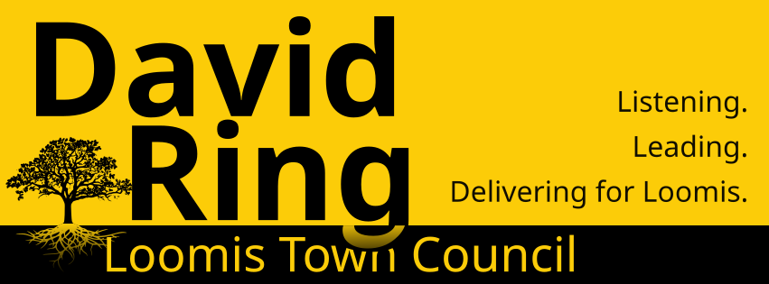

Almost 15 years ago, my wife and I fell in love with the small-town feel and open, rural spaces of Loomis, and we set down roots on three acres of horse property to raise our family. We're proud that both of our sons are now Del Oro graduates.
I come from several generations of small-town Illinois farmers, and that upbringing shaped my respect for agriculture, small business, and open space — values I carry into my work at the USDA today.
The last four years, I've had the honor of serving on the Town Council, including one year as your Mayor. Here's what sets me apart:
I've been registered as "No Party Preference" for over 20 years. Party loyalty has no place in decisions about potholes, parks, and open space. What's best for Loomis should be all that matters.
Anyone that has served on a committee with me knows that I ask a lot of questions. It is important to me that I approach every vote with reason, armed with all the information available.
Everyone deserves to have their voice heard, and heard with compassion. I have held monthly round table meetings open to anyone for nearly four years in office. No other candidate has done anything like this.
I genuinely enjoy serving the Loomis community, and I bring enthusiasm and humility to every meeting, every decision, and every conversation with residents.
Taxpayer dollars should go to benefit our community, not special interests. Spending your money wisely just takes common sense.
Reason, compassion, humility, and common sense: the same values I promised four years ago, and the ones I still promise to bring to every decision I make on your behalf. I'd be honored to earn your vote again.
Every dollar helps — contributions go directly toward yard signs, campaign cards, and mailings to reach Loomis voters.
Scan with your phone's camera to donate via Zelle.
If donating $100 or more,Contributions over $100 must be reported per California campaign finance law.